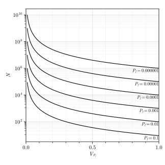

Monte Carlo Simulations
Overview
Using brute force Monte Carlo simulations (MCS) is the simplest way to estimate the probability of failure $P_{f}$ for reliability problems with both simple and complex limit state functions $g(\vec{X})$. The brute force MCS relies on the following reformulation of the general analytical expression for the probability of failure $P_{f}$:
\[P_{f} = P(\Omega_{f}) = \int_{\Omega_{f}} f_{\vec{X}}(\vec{x}) d\vec{x} = \int_{\mathbb{R}^{n}} \mathbb{I}(\vec{x}) f_{\vec{X}}(\vec{x}) d\vec{x} = \mathbb{E}[\mathbb{I}(\vec{x})]\]
where $f_{\vec{X}}(\vec{x})$ is the joint probability function of the input random vector $\vec{X}$, $\Omega_{f} = \{\vec{X}: g(\vec{X}) \leq 0\}$ is the failure domain defined by the limit state function $g(\vec{X})$, and $\mathbb{I}(\vec{x})$ is the indicator function given by:
\[\mathbb{I}(\vec{x}) = \begin{cases} 1 & \text{if } \vec{x} \in \Omega_{f} \\ 0 & \text{otherwise} \end{cases}\]
Hence, the probability of failure $P_{f}$ is defined as the expectation of the indicator function $\mathbb{I}(\vec{x})$. If samples of the input random vector $\vec{x}$ are generated numerically, then the estimator of the probability of failure $\hat{P}_{f}$ is
\[\hat{P}_{f} = \dfrac{1}{N} \sum_{i = 1}^{N} \mathbb{I}(\vec{x}_{i})\]
where $N$ is the number of generated sampled. The estimator $\hat{P}_{f}$ is unbiased, i.e., it correctly predicts the true probability of failure, such that $\mathbb{E}(\hat{P}_{f}) = P_{f}$. The main drawback of using the MCS is that is becomes prohibitively expensive to use if the true probability is too small, e.g., $P_{f} \lessapprox 10^{-6}$, given that the variance of the estimator is inversely proportional to the number of generated samples, such that,
\[\text{Var}(\hat{P}_{f}) = \frac{1}{N} P_{f} (1 - P_{f})\]
For typical structural reliability problems with true probabilities of failure $P_{f}$ of $\approx 10^{-3}$, it is recommended to use $N = 10^{6}$ samples to get the coefficient of variation of the estimator $V_{P_{f}}$ of $\approx 0.10$.
API
Fortuna.MCS — Typestruct MCS <: AbstractReliabililyAnalysisMethodA custom type used by Fortuna.jl to perform reliability analysis using Monte Carlo simulations.
NumSamples: Number of samplesSamplingTechnique: Sampling technique used to generate samples
Fortuna.analyze — Methodanalyze(Problem::ReliabilityProblem, AnalysisMethod::MCS)The function solves the provided reliability problem using Monte Carlo simulations.